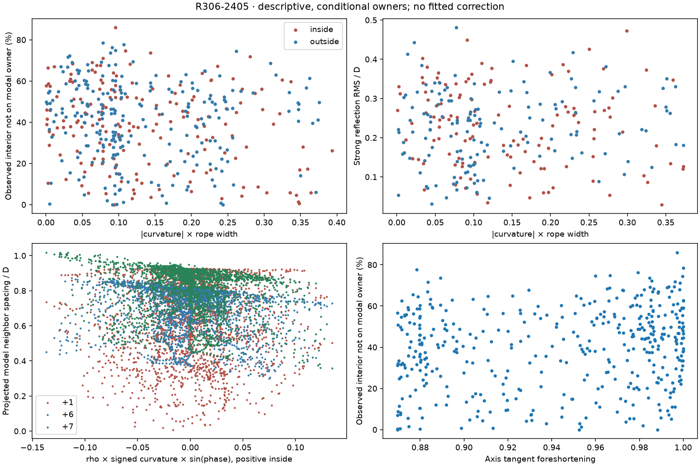
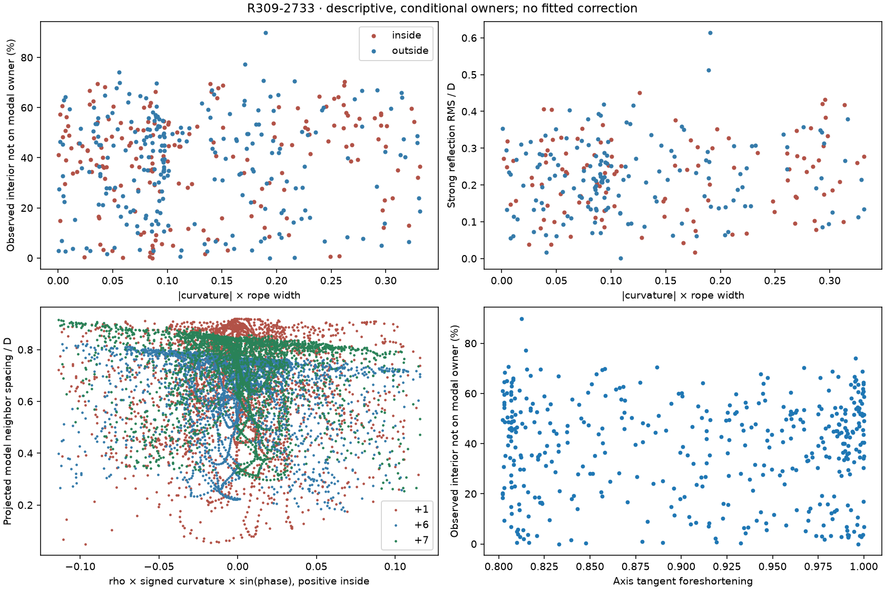
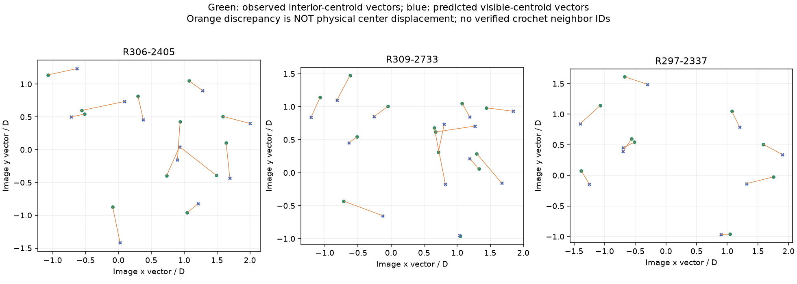
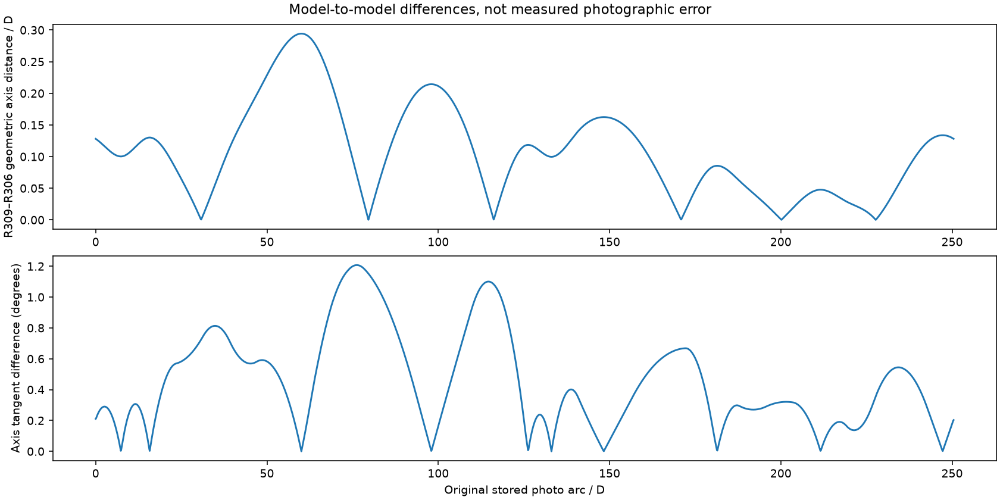
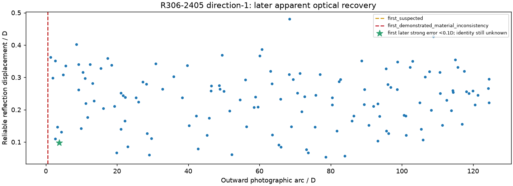
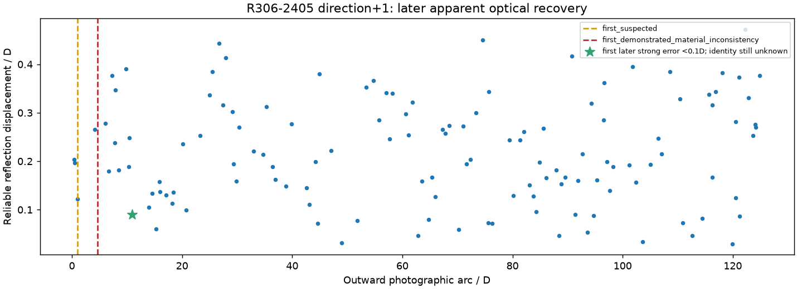
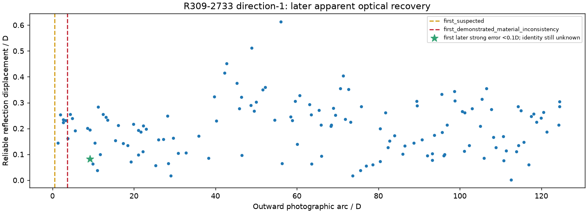
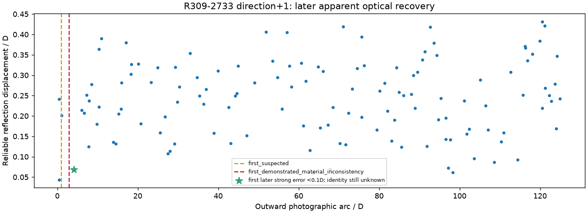
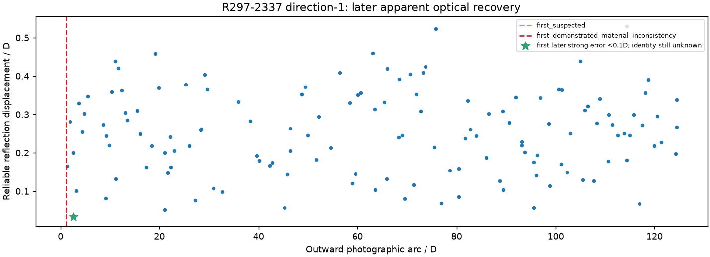
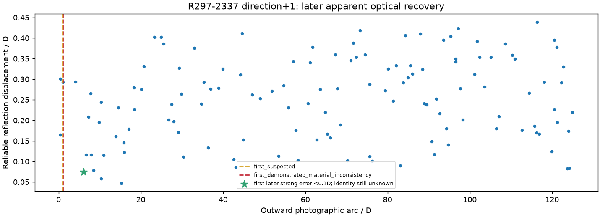

Diagnostic only: unchanged complete models. Physical identities are conditional. Yellow rings = observed reflections; white crosses = predicted reflections; orange vectors = Euclidean displacement. Cyan = native visible boundaries; green tint = observed positive interiors; magenta links = modeled +1/+6/+7, not verified photo neighbors. Bead centers are marked separately. D=36.878px.
Report · Reproduce · Part A data · Curvature data
Loading…
Click either image to recenter at that photographic point and select the nearest projected model center (selection is not an ownership assertion). Changing model preserves photo coordinates and zoom.









